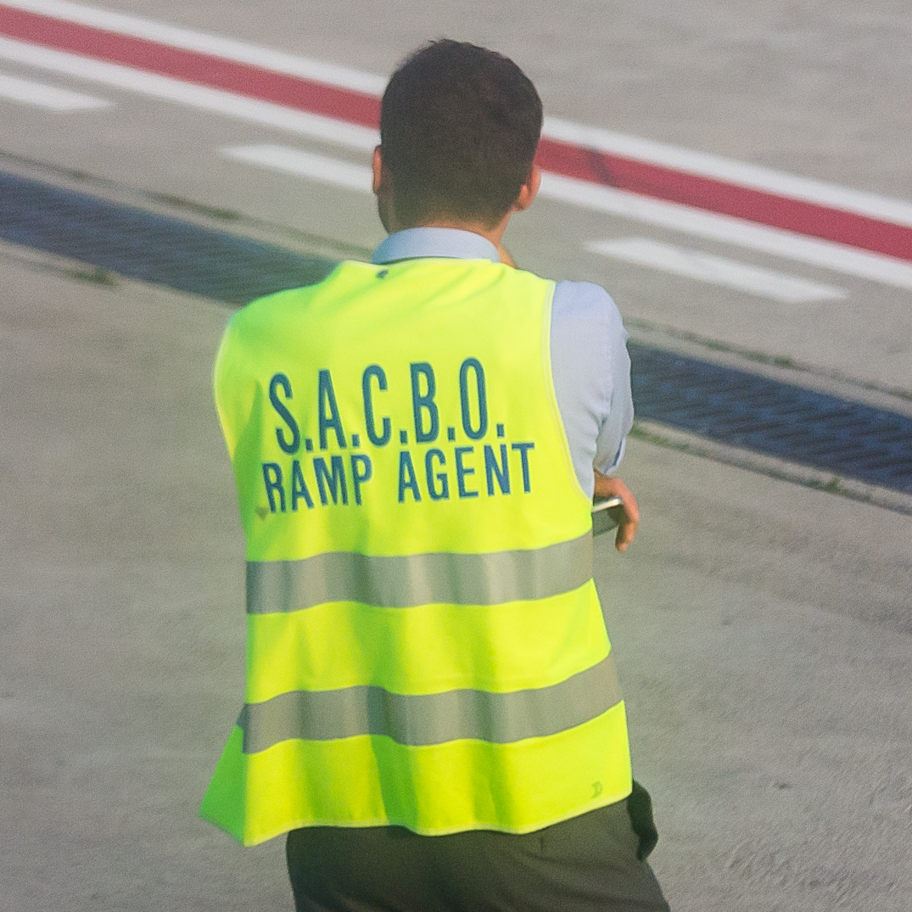

Así se curra en AENA
6 tíos para descargar 150 maletas que se estorban entre sí.
No se sabe cuántos hay en la panza del avión.

Posted On: 2021-08-30T00:00:00
Posted By: Despotricador
Debe de ser un curro horrible.
Posted On: 2021-08-30T00:00:00
Posted By: Intuitiva Feladora
ponte tu en agosto a las 3.30 de la tarde a descargar maletas mientras un julay te echa fotos desde el avion
Posted On: 2021-08-30T00:00:00
Posted By: ULTRAPACO
Bueno, mozo de rampa creo que es el puesto, es un trabajo de los duros.
Posted On: 2021-08-30T00:00:00
Posted By: Chimpu
Ve eso un japonés y explota
Posted On: 2021-08-30T00:00:00
Posted By: sisar_vidal
recuerdo un dia en munich que habia huelga de personal y dijeron por megafonia en el avion al llegar que sus maletas podrian tardar mas de lo debido en salir por la cinta porque solo habia un operario por avion descargando las caras de los que llevaban equipaje facturado fue un poema menos mal que casi siempre viajo solo con equipaje de mano
Posted On: 2021-08-30T00:00:00
Posted By: il banditto
es.m.wikipedia.org
Operaciones en rampa Editar Carga de equipaje: Normalmente se utiliza un vehículo especializado para ello, se puede tratar de equipaje suelto o en ULD´s, dependiendo del tamaño y capacidad del avión, esto también incluye a aeronaves de carga.Cáterin: Limpieza y re-abastecimiento de los servicios de cáterin, aunque normalmente la compañía de cáterin suele tener sus propios agentes para ejercer esta función.
Push-back de un B747, uno de los ejercicios de los agentes de rampa.Posicionamiento: Colocación de unidades de alimentación externa (GPU), escaleras, conos, vehículos de carga de equipaje, unidades de ventilación, cuñas y pasarelas.Push-back: Remolque a la calle de rodaje con un tractor y la dirección de la misma mediante un cable de comunicación a la cabina, colocación de pins en el tren delantero.Guía de aparcamiento: Guía mediante un Marshaller.Repostaje de combustible: Abastecimiento de combustible de aviación con un camión cisterna.Inspección visual: Inspección de la aeronave, usualmente se hace en conjunto a los pilotos.Extracción de hielo de las alas: derretimiento del hielo en alas con camiones diseñados para este propósito, este servicio es proporcionado solo cuando es necesario.Tratamiento de desechos: Vaciado del tanque de aguas negras del avión y llenado del depósito de agua limpia para el próximo vuelo.Operaciones fuera de la rampa Editar Transporte de equipaje: Transporte desde la zona de carga/descarga a la rampa y viceversa.
Carros de carga utilizados por aeropuertos Remolque de aeronaves: Remolque hacia zonas de mantenimiento, otros aparcamientos u hangares
( por si pensabais que se rascan los huevos)
Posted On: 2021-08-30T00:00:00
Posted By: Chimpu
eso no es AENA, es cualquier subcontrata de handling pero te aseguro que AENA no
Posted On: 2021-08-30T00:00:00
Posted By: #SrLobo
ULTRAPACO dijo: ponte tu en agosto a las 3.30 de la tarde a descargar maletas mientras un julay te echa fotos desde el avion
He visto gente a esas horas cavando zanjas y se quejan menos que tú.
Posted On: 2021-08-30T00:00:00
Posted By: Despotricador
Chimpu dijo:
La foto lo demuestra con claridad.No se lo que hacen el resto de la jornada.
Posted On: 2021-08-30T00:00:00
Posted By: Despotricador
#SrLobo dijo: eso no es AENA, es cualquier subcontrata de handling pero te aseguro que AENA no
Es una instalación de AENA.
Si es una subcontrata deberían revisar las condiciones.Están pagando demasiado.
Posted On: 2021-08-30T00:00:00
Posted By: Despotricador
Despotricador dijo: Es una instalación de AENA.Si es una subcontrata deberían revisar las condiciones.Están pagando demasiado.
Comorr ??'es un empleo precario...
8 sueldos de Agente De Rampa proporcionados anónimamente por empleados.¿Cuál es el sueldo de Agente De Rampa en tu área?
www.glassdoor.es
Posted On: 2021-08-30T00:00:00
Posted By: Chimpu
https://m.forocoches.com/foro/showthread.php?t=6667086
Posted On: 2021-08-30T00:00:00
Posted By: Chimpu
No solo hacen eso, es trabajo de wilsons mal pagado y esclavo
Posted On: 2021-08-30T00:00:00
Posted By: GRS
#SrLobo dijo: eso no es AENA, es cualquier subcontrata de handling pero te aseguro que AENA no
Pero es el trabajo que es, ?Igual te crees que los operarios de AEMA lo harían mejor?Pues no, lo harían igual sólo que habría que pagarles un 35% mas aproximadamente
Posted On: 2021-08-30T00:00:00
Posted By: KUTRONIO

Content Date: 2021-08-30
Download Date: 2021-09-09
Document ID: L0C04G1NP